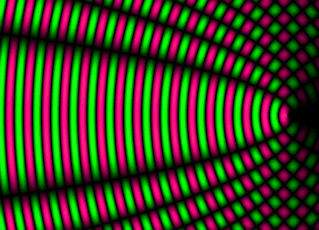
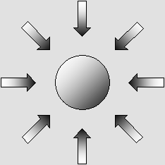
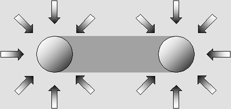

|
|
| 00 | 01 | 02 | 03 | 04 | 05 | 06 | 07 | 08 | 09 | 10 | 11| 12 | 13 | 14 | 15 | 16 | 17 | 18 | 19 | 20 | 21 | 22 | 23 | 24 | 25 | 26 | 27 | 28 | 29 | 30 | 31 | 32 | 33 | 34 |
GRAVITY
The gravity mechanism.
There is a shade effect followed by the equivalent radiation between two material bodies.
Henri Poincare and other authors demonstrated that the wave energy should be equal everywhere.
This argument is not relevant anymore because the radiation pressure exerted by intermediate fields of force is weaker in spite of this.
|
The plano-convex field of force. Matter is made of waves and it radiates waves all around. Because the universe is filled up with enormous quantities of matter, the replenishment or amplification process transforms plane waves incoming from very distant matter all around into outgoing spherical waves whose energy is equal. Additionally, waves radiated by matter create standing waves because of all incoming plane waves. The result is an unusual standing wave set which may be called a plano-convex field of force. |
|
 |
The plano-convex field of force.
Outgoing spherical waves and incoming plane waves are adding constructively.
|
The biconvex field of force. Between two material bodies, however, waves are spherical on both sides. The result is a biconvex field of force. |
|
|
The biconvex field of force.
Spherical waves incoming from both sides produce a different standing wave pattern.
For a given area, the central on-axis pattern is smaller despite the theoretically equal wave energy.
This smaller standing wave pattern radiates less energy. This causes a weaker radiation pressure.
|
Inertia. Galileo showed that any moving body should go on moving as long a no action or friction causes it to decelerate. He called this phenomenon "inertia" and the principle was more formally worded later as Newton's first law. However, Newton was not aware that matter is constantly surrounded with equally distributed and powerful plano-convex fields of force. The final result remains inertia anyway because all actions cancel as long as they are equal. |

Inertia.
Matter constantly radiates spherical waves all around which create strong but still imperceptible fields of force.
The important point is that because of this, weaker fields on any side cause motion, acceleration or deceleration.
|
The shade effect and the radiation pressure. All forces are the result of a difference between the radiation pressure and the shade effect. The attraction effect between two material bodies may be the result of a higher radiation pressure from opposite sides. However, in the case of gravity, it is rather caused by a lower radiation pressure between them. |

The shade effect.
This attractive force is usually cancelled because the intercepted energy is radiated again towards both material bodies.
This is what Poincare and other scientists thought.
|
The final disequilibria. Because matter extracts some energy from plane aether waves, there is a shade effect between two material bodies. This causes the intermediate plano-convex fields to be weaker than the external ones. This is why they are displayed as smaller arrows in the diagram below. Then the extracted energy is totally radiated again into spherical waves and two joined additional arrows are added right in the middle of the diagram. Theoretically, the energy sum for two smaller arrows equals that of one bigger arrow and the result should still be inertia. Because of this, Henri Poincare and other authors thought that this would cancel the shade effect and that no residual force should remain. They all concluded that waves could not explain gravity. For example, the sun intercepts a little amount of energy from aether waves. This produces a shade effect, which is an attractive force. Then the sun radiates the exact amount of energy as spherical wavelets which create plano-convex fields all around including the intermediate shaded space, where they are weaker because of the weaker plane waves. The same radiated waves also create additional biconvex fields of force because they encounter opposite spherical waves. Such fields are truly weaker for a given quantity of energy and they cannot cancel exactly the attractive force. It turns out that inside the intermediate shaded space, the sum of both plano-convex and biconvex gravitational fields of force cannot achieve equilibrium any more. The important point is that biconvex fields of force are weaker than plano-convex ones. Even though the wave energy involved is the same, the radiation pressure is not. |
The complete gravity mechanism.
|
It should be emphasized that the difference is very small. Gravity is not the "fundamental force of the Universe". It is only a residual force, quite insignificant as compared to the sum of transferred energy from incoming to outgoing waves by one kilogram of matter during one second, which is far greater then Einstein's mc squared.
NEWTON WAS RIGHT Isaac Newton showed that the gravity force F acts according to a constant G, the mass M of two material entities, and according to the square of the distance L as given by: F = G M1 M2 / L 2 This is brilliant, albeit Newton never explained the gravity mechanism. He wrote : "Hypotheses non fingo". (I do not to put forth assumptions).
As a matter of fact, gravity cannot work exactly as Newton predicted. There are many reasons :
The list is not exhaustive. Many more phenomena appear rather strange and need to be more carefully explained. However, there is no need to calculating gravity in a totally new way. Newton's equation works to a first approximation, and then one must make some adjustments for special cases if needed. The light is not affected by gravity. However, electrons are capable of regenerating some new light, for example inside air, water or optical glass. So one can explain similar deviations by the presence of particles, especially close to the Sun or stars. Because of the variable solar wind, this deviation should not be constant, albeit the particle speed may compensate for variable density. This was demonstrated by the Fizeau experiment. A gaseous cloud around or inside a galaxy may also produce a lens effect. And finally, a black hole cannot emit any light simply because its plasma cannot. It is a well known fact that matter inside a quasar or pulsar is highly compressed into a very dense plasma. Such matter surely cannot emit normal light because of its severely modified structure, albeit external gaseous rings or layers still can. There is no General Relativity because gravity rarely involves "relativistic" speed. Gravity is just a regular force, quite similar to all other forces. Surely, gravity cannot "bend space". It is geometrically impossible. This hypothesis is totally absurd, actually an insult to our intelligence. What's more, it does not mechanically explain anything. Frankly, did you really believe that? It is much better to simply admit Newton's law. |
| 00 | 01 | 02 | 03 | 04 | 05 | 06 | 07 | 08 | 09 | 10 | 11| 12 | 13 | 14 | 15 | 16 | 17 | 18 | 19 | 20 | 21 | 22 | 23 | 24 | 25 | 26 | 27 | 28 | 29 | 30 | 31 | 32 | 33 | 34 |
|
|
Bois-des-Filion in Québec. Email Please read this notice. On the Internet since September 2002. Last update January 26, 2010. |